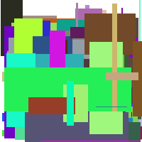

Lisp Project of the Day
skippy-renderer & zpng
You can support this project by donating at:


skippy-renderer & zpng
Today I'd like to tell you about two libraries:
- skippy-renderer
- zpng
Both allow you to work with graphics format GIF and PNG.
"Skippy-renderer" extends Skippy from the previous post. It is able to produce a sequence of images from the GIF.
All images will have the same size and can be combined into the video or written in the separate images.
Let's try to tear apart the GIF, made in the previous post.
First, we need to read data from a file using skippy's "load-data-stream" function:
POFTHEDAY> (defparameter *data-stream*
(skippy:load-data-stream
"docs/media/0029/example.gif"))
POFTHEDAY> *data-stream*
#<SKIPPY::DATA-STREAM geometry 200x200, 256 images {1003E25683}>Skyppy renderer returns us a sequence of vectors with ARGB or BGRA bytes:
POFTHEDAY> (skippy-renderer:render *data-stream*)
(#(0 0 0 0 0 0 0 0 0 0 0 0 0 0 0 0 0 0 0 0 0 0 0 0 0 0 0 0 0 0 0 0 0 0 0 0 0 0
0 0 0 0 0 0 0 0 0 0 0 0 0 0 0 0 0 0 0 0 0 0 0 0 0 0 0 0 0 0 0 0 0 0 0 0 0 0
0 0 0 0 0 0 0 0 0 0 0 0 0 0 0 0 0 0 0 0 0 0 0 0 0 0 0 0 0 0 0 0 0 0 0 0 0 0
...As the second and third value, it returns delays between frames and image size.
Now we'll try to render 150-th frame of the animation into a PNG image, using another graphics library from @xach - "zpng".
POFTHEDAY> (defvar *gif-frame*
(nth 150
(skippy-renderer:render
*data-stream*)))
POFTHEDAY> (defparameter *png*
(make-instance 'zpng:png
:color-type :truecolor-alpha
:width 200
:height 200))
POFTHEDAY> (defparameter *png-data*
(zpng:data-array *png*))
POFTHEDAY> (loop for y from 0 upto 199
do (loop for x from 0 upto 199
for idx = (* (+ (* y 200) x) 4)
do (setf
;; Red
(aref *png-data* y x 0)
(aref *gif-frame* (+ idx 1))
;; Green
(aref *png-data* y x 1)
(aref *gif-frame* (+ idx 2))
;; Blue
(aref *png-data* y x 2)
(aref *gif-frame* (+ idx 3))
;; Alpha
(aref *png-data* y x 3)
(aref *gif-frame* (+ idx 0)))))
POFTHEDAY> (zpng:write-png *png*
"docs/media/0030/150-frame.png")
#P"/Users/art/poftheday/docs/media/0030/150-frame.png"Here I've moved data from 150-th GIF frame into a PNG image frame. I have to move "alpha" byte because GIF frame has ARGB order of bytes, but PNG image uses RGBA.
Here is the resulting PNG image:

This way, you can save all frames into files and encode them to the video format using FFmpeg. Or do some analysis or other crazy things.
Brought to you by 40Ants under